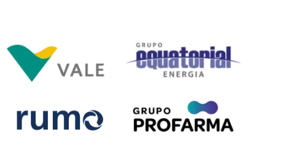
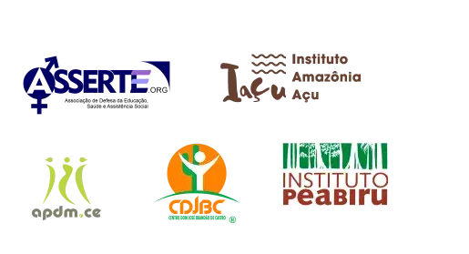

Filtre por estado e veja quantos NUCAs já foram criados e o total de adolescentes cadastrados, engajados e transformando o seu município e seus arredores nesta edição do Selo Unicef
Carregando dados nacionais...
...
NUCAs criados
...
Adolescentes inscritos
Os Núcleos de Cidadania de Adolescentes (NUCAs) fazem parte da metodologia do Selo UNICEF e são um indicador essencial da garantia do direito à participação de adolescentes e jovens, assegurando espaço seguro para o desenvolvimento das competências e da cidadania de meninas, menines e meninos em seus territórios. Saiba mais sobre os NUCAs nesta edição do Selo UNICEF 2025 - 2028.
Filtre por estado e veja quantos NUCAs já foram criados e o total de adolescentes cadastrados, engajados e transformando o seu município e seus arredores nesta edição do Selo Unicef
Carregando dados nacionais...
| Estado | Município | Adolescentes engajados | Indígenas | Quilombolas | Ciganos |
|---|
Parcerias
Parcerias estratégicas
Parcerias técnicas
